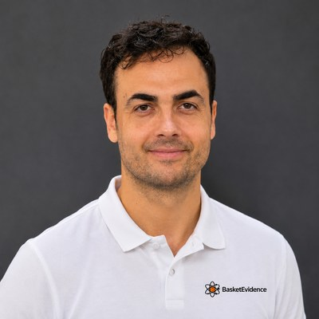

BasketEvidence es la web que me habría gustado encontrar cuando empecé a entrenar: un lugar donde aprender baloncesto a partir de la mejor investigación científica publicada por universidades y centros de investigación de todo el mundo.
En el baloncesto se habla mucho desde la experiencia personal y la intuición. Ambas son valiosas. Pero aquí añadimos otra mirada: la ciencia y los datos.
Analizamos la evidencia científica y con ella contestamos preguntas e intentamos dar sentido a todo lo que se hace en la pista.
Un espacio pensado para entrenadores, preparadores físicos y jugadores que quieren entender mejor el juego y tomar decisiones desde el conocimiento.

Álvaro García Tomás
Editor de BasketEvidence
Cada artículo parte de un estudio y lo cuenta sin rodeos: el hallazgo primero, los datos que lo sostienen, qué significa para el trabajo del staff y, sobre todo, qué no significa. La forma se adapta a cada investigación —no es lo mismo un análisis de miles de partidos que un experimento o un metaanálisis—, pero el compromiso es siempre el mismo.
Vas a encontrar el dato claro y en su contexto, el lenguaje llano en lugar de la jerga, y los límites de cada estudio dichos con honestidad. Porque un hallazgo solo es útil cuando se entiende hasta dónde llega.
La evidencia no sustituye al entrenador. No elimina la experiencia. No da respuestas automáticas.
Pero puede ayudar a hacer mejores preguntas y tomar decisiones con más criterio.
BasketEvidence es ciencia aplicada al baloncesto, sin ruido y con vocación de pista.